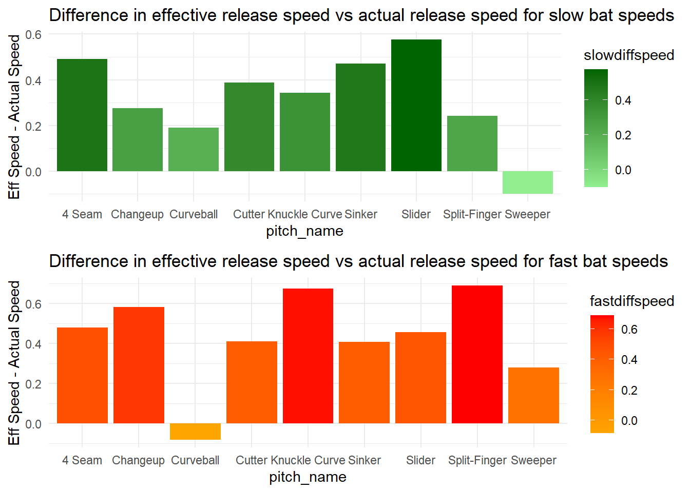

# Data cleaning including selecting relevant variables that might be useful in our analysis, joining datasets to include pitcher's names in our main dataset, and filtering out any data points that are NA for bat_speed and swing_length (since we will rely heavily on these variables for our analysis), as well as any data points that don't involve any swing being made(takes, hit by pitches, bunts, etc.)baseballdataclean <- baseballdata %>%select(game_date, release_speed, player_name, events, zone, stand, p_throws, bb_type, balls, strikes, pfx_x, pfx_z, outs_when_up, inning, hit_distance_sc, launch_angle, launch_speed, effective_speed, release_spin_rate, launch_speed_angle, estimated_ba_using_speedangle, estimated_woba_using_speedangle, woba_value, bat_score, fld_score, pitch_name, pitcher, bat_speed, swing_length, description)baseballdataclean2 <- baseballdataclean %>%left_join(playerdataclean, by =c("pitcher"="MLBID"))baseballdataclean2 <- baseballdataclean2 %>%mutate(pitch_name =recode(pitch_name, "4-Seam Fastball"="4 Seam"))baseballdataclean2 <- baseballdataclean2 %>%filter(bat_speed !='NA') %>%filter(swing_length !='NA') %>%filter(!description %in%c("ball", "called_strike", "blocked_ball", "pitchout", "hit_by_pitch", "foul_bunt","missed_bunt", "bunt_foul_tip"))
# Generating a dataset of the top 25 pitchers who generate the fastest bat speeds against, arranged by their average bat speed against with a count of their number of data pointsfastswings <- baseballdataclean2 %>%filter(!is.na(PLAYERNAME)) %>%filter(bat_speed >75)pitcheraverage <- fastswings %>%group_by(PLAYERNAME) %>%summarize(avg_bat_speed =mean(bat_speed)) %>%arrange(desc(avg_bat_speed))pitcheraverage
# A tibble: 555 × 2
PLAYERNAME avg_bat_speed
<chr> <dbl>
1 Michael Mercado 85.3
2 Brett De Geus 84.0
3 Riley Pint 82.5
4 Nick Pratto 81.1
5 Owen Miller 80.3
6 Joan Adon 80.2
7 Nick Nelson 80.0
8 Spencer Strider 80.0
9 Jake Bauers 79.7
10 Connor Brogdon 79.5
# ℹ 545 more rows
# A tibble: 25 × 3
PLAYERNAME avg_bat_speed n
<chr> <dbl> <int>
1 Spencer Strider 80.0 14
2 Julio Teheran 79.4 11
3 Yency Almonte 79.4 16
4 Dan Altavilla 79.1 8
5 Mason Black 78.7 26
6 Paolo Espino 78.6 15
7 Allan Winans 78.6 8
8 A.J. Puk 78.6 40
9 Ryan Thompson 78.6 53
10 Ben Joyce 78.6 9
# ℹ 15 more rows
# Calculating average spin rate by pitch type for the top 25 pitchers with the highest average swing speed againsttop25allfast <-top25fast %>%left_join(baseballdataclean2, by =c("PLAYERNAME"="PLAYERNAME"))fastspins <- top25allfast %>%group_by(pitch_name) %>%summarize(meanspinfast =mean(release_spin_rate, na.rm =TRUE))fastspins
# Generating a dataset of the top 25 pitchers who generate the slowest bat speeds against, arranged by their average bat speed against with a count of their number of data pointstenth_percentile <-quantile(baseballdataclean2$bat_speed, 0.1)slowswings <- baseballdataclean2 %>%filter(!is.na(PLAYERNAME)) %>%filter(bat_speed < tenth_percentile)pitcheraverageslow <- slowswings %>%group_by(PLAYERNAME) %>%summarize(avg_bat_speed =mean(bat_speed)) %>%arrange(avg_bat_speed)pitcheraverageslow
# A tibble: 538 × 2
PLAYERNAME avg_bat_speed
<chr> <dbl>
1 Joan Adon 36.7
2 Zach Plesac 37.4
3 Josh Sborz 39.0
4 Dan Altavilla 39.2
5 Jake Bloss 40.4
6 Jason Foley 43.5
7 Max Scherzer 43.6
8 Joey Lucchesi 43.6
9 Wade Miley 43.7
10 Pablo Reyes 43.8
# ℹ 528 more rows
# A tibble: 25 × 3
PLAYERNAME avg_bat_speed n
<chr> <dbl> <int>
1 Dan Altavilla 39.2 8
2 Jason Foley 43.5 15
3 Dylan Floro 44.1 19
4 Edward Cabrera 44.7 19
5 Yonny Chirinos 45.1 8
6 Dominic Leone 45.6 9
7 Braxton Garrett 45.9 17
8 Alek Manoah 46.0 14
9 Trent Thornton 46.4 39
10 Mitch White 46.7 17
# ℹ 15 more rows
# Calculating average spin rate by pitch type for the top 25 pitchers with the lowest average swing speed againsttop25allslow <-top25slow %>%left_join(baseballdataclean2, by =c("PLAYERNAME"="PLAYERNAME"))slowspins <- top25allslow %>%group_by(pitch_name) %>%summarize(meanspinslow =mean(release_spin_rate, na.rm =TRUE))slowspins
# Showing Spin difference on average between pitchers who generate slow bat speeds vs pitchers who generate fast bat speedsspindiff <- fastspins %>%left_join(slowspins, by =c("pitch_name"="pitch_name")) %>%mutate(spindiff = meanspinslow - meanspinfast)spindiff
spindiff %>%ggplot() +geom_col(aes(x = pitch_name, y = spindiff, fill = spindiff)) +scale_fill_gradient(low ="cyan", high ='navy') +theme_minimal() +labs(title ="Average Spin Rate Difference: Pitchers With Fast vs Slow Bat Speeds Against", caption ="Calculation: spin of pitchers with slow bat speeds against - spin of pitchers with fast bat speeds against", x ="Pitch Type", y ="Difference In Average Spin Rate")
velodiff %>%ggplot() +geom_col(aes(x = pitch_name, y = velodiff, fill = velodiff)) +scale_fill_gradient(low ="pink", high ='violet') +theme_minimal() +labs(title ="Average Velocity Difference: Pitchers With Fast vs Slow Bat Speeds Against", caption ="Calculation: velo of pitchers with slow bat speeds against - velo of pitchers with fast bat speeds against", x ="Pitch Type", y ="Avg Velo Difference")
slowdiffplot <- slowdiff %>%ggplot() +geom_col(aes(x = pitch_name, y = slowdiffspeed, fill = slowdiffspeed)) +labs(y ="Eff Speed - Actual Speed", title ="Difference in effective release speed vs actual release speed for slow bat speeds") +scale_fill_gradient(low ="lightgreen", high ='darkgreen') +theme_minimal()
fastdiffplot <- fastdiff %>%ggplot() +geom_col(aes(x = pitch_name, y = fastdiffspeed, fill = fastdiffspeed)) +labs(y ="Eff Speed - Actual Speed", title ="Difference in effective release speed vs actual release speed for fast bat speeds") +scale_fill_gradient(low ="orange", high ='red') +theme_minimal()
library(gridExtra)
Attaching package: 'gridExtra'
The following object is masked from 'package:dplyr':
combine
grid.arrange(slowdiffplot, fastdiffplot, nrow =2)

Data Context
Our data was collected using Statcast, by CSAS (Connecticut Sports Analytics) to analyze pitcher-batter interactions in MLB. Every MLB ballpark is equipped with Statcast tracking technology, which is used to acquire the data. See this link statcastlink for more background on Statcast. It contains data on 346,250 Major League Baseball plate appearances from 4/2/2024 to 6/30/2024 (first half of the 2024 regular season), as well as 94 different variables.
The codebook for our data can be found at this link: codebooklink
Project Topic
The effect of pitchers on batters’ swing speeds and swing lengths
Questions We Wish To Explore
Do pitchers modify batters’ behavior? That is do batters’ swing speeds differ depending on something pitchers do?
Do some pitchers elicit different swing speeds and swing lengths than others? That is, are some pitchers better at slowing down batters’ swing speeds or making their swings longer?
If pitchers do affect a batter’s swing speed/length, what is the cause of this? Is it pitch speed, pitch movement, or something else?
Plan
With this data, we can address all of the above questions individually:
To address these questions, we would need pitch speed, pitch movement, pitch spin, swing speed, swing length, pitcher name. Our dataset has variables that correspond to each of these measurements. Roughly, we would start by grouping by pitcher and analyzing their average pitch movements, spins, and velocities. Then, we would analyze batters’ swing speeds and lengths, and filter to only look at instances when their swing speeds/lengths are unusually low or high. Then we could explore this further by looking for correlations between pitcher data and the observed unusual values for swing speed/length, while comparing to the individual hitters’ average swing statistics.